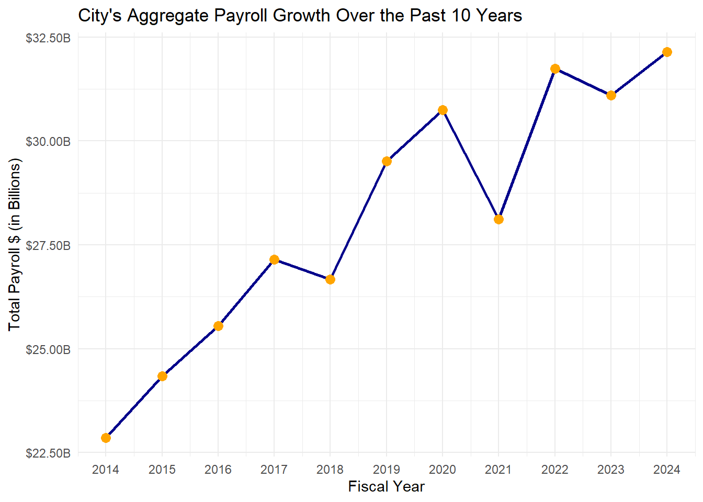
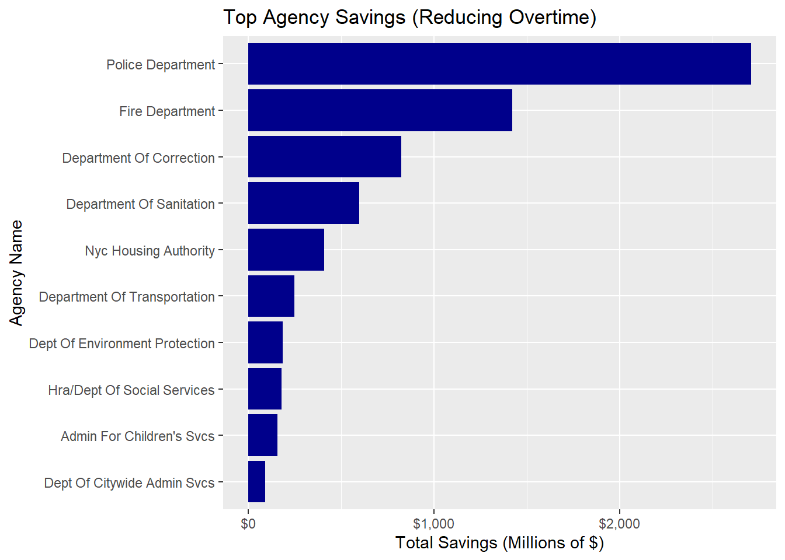

As a newly appointed senior technical analyst for New York City’s Commission to Analyze Taxpayer Spending (CATS), I have been tasked by Commission Chair Mr. Keno Slum to examine the city’s payroll expenditures. The objective is to provide the Commissioners with a clear understanding of the current allocation of funds towards employee compensation and to identify disparities between the salaries of senior agency officials and rank-and-file city employees. This analysis aims to uncover instances where high-ranking officials receive significantly higher compensation compared to their subordinates, thereby highlighting potential areas for more equitable and effective use of taxpayer money.
Objective
Investigate the highest-paid city employees and job titles.
Analyze the overtime hours and gross annual pay distributions.
Understand how the payroll has evolved over the past decade.
Evaluate potential savings through policy changes, such as salary capping or increasing staffing to reduce overtime.
After analyzing the city payroll data, the job title with the highest base rate of pay is identified as Chief Actuary. The average base annual salary for this position is $296,470.
Hourly Rate Determination: The hourly rate for each job title was extracted from the payroll dataset. Standard Work Year Assumption: A standard 2000-hour work year was assumed, representing a full-time employee’s expected annual working hours.
Which individual & in what year had the single highest city total gross pay?
In this analysis, gross annual pay was used as the basis for identifying the employee with the highest earnings. Gross annual pay includes base salary , overtime paid , additional compensation such as bonuses, overtime, and other forms of variable pay.
This differs from the annualized base rate pay, which only accounts for the fixed salary or base compensation, excluding additional earnings like bonuses and overtime.
The employee with the highest gross annual pay is Mark K. Tettonis, who holds the position of Chief Marine Engineer at the Department Of Transportation with a gross annual salary of $1,689,518 in 2024
The employee with most overtime hours is John Castillo, working for the Department Of Correction as a Correction Officer with 2.212^{4} hours or about 922 days.
Which agency has the highest average total annual payroll?
Here is a list of the 5 agency that have the highest average annual payroll
Show the code
data <- data|>mutate(aggregated_agency_name =replace(agency_name, str_detect(agency_name, "Dept Of Ed"), "DEPARTMENT OF EDUCATION")) |>mutate(aggregated_agency_name =replace(aggregated_agency_name, str_detect(agency_name, "Community Board"), "COMMUNITY BOARD")) |>mutate(aggregated_agency_name =replace(aggregated_agency_name, str_detect(agency_name, "Borough President"), "BOROUGH PRESIDENT")) |>mutate(aggregated_agency_name =replace(aggregated_agency_name, str_detect(agency_name, "District Attorney"), "DISTRICT ATTORNEY")) |>mutate(aggregated_agency_name =replace(aggregated_agency_name, str_detect(agency_name, "Public Administrator"), "PUBLIC ADMINISTRATOR")) |>mutate(aggregated_agency_name =replace(aggregated_agency_name, str_detect(agency_name, "Sanitation"), "DEPARTMENT OF SANITATION")) |>mutate(aggregated_agency_name =replace(aggregated_agency_name, str_detect(agency_name, "Fire Department"), "FIRE DEPARTMENT")) |>mutate(aggregated_agency_name =replace(aggregated_agency_name, str_detect(agency_name, "Police Department"), "POLICE DEPARTMENT")) |>mutate(aggregated_agency_name =replace(aggregated_agency_name, str_detect(agency_name, "Health"), "DEPARTMENT OF HEALTH")) |>mutate(aggregated_agency_name =replace(aggregated_agency_name, str_detect(agency_name, "Transportation"), "DEPARTMENT OF TRANSPORTATION")) |>mutate(aggregated_agency_name =replace(aggregated_agency_name, str_detect(agency_name, "Public Service"), "PUBLIC SERVICE COMMISSION")) |>mutate(aggregated_agency_name =replace(aggregated_agency_name, str_detect(agency_name, "Fire Pension Fund"), "FIRE PENSION FUND")) |>mutate(aggregated_agency_name =replace(aggregated_agency_name, str_detect(agency_name, "DEPT OF ED"), "DEPARTMENT OF EDUCATION")) |>mutate(aggregated_agency_name =replace(aggregated_agency_name, str_detect(agency_name, "PUBLIC ADMINISTRATOR"), "PUBLIC ADMINISTRATOR")) |>mutate(aggregated_agency_name =replace(aggregated_agency_name, str_detect(agency_name, "STATEN ISLAND COMMUNITY BD"), "STATEN ISLAND COMMUNITY BD")) |>mutate(aggregated_agency_name =replace(aggregated_agency_name, str_detect(agency_name, "QUEENS COMMUNITY BOARD"), "QUEENS COMMUNITY BOARD")) |>mutate(aggregated_agency_name =replace(aggregated_agency_name, str_detect(agency_name, "MANHATTAN COMMUNITY BOARD"), "MANHATTAN COMMUNITY BOARD")) |>mutate(aggregated_agency_name =replace(aggregated_agency_name, str_detect(agency_name, "BROOKLYN COMMUNITY BOARD"), "BROOKLYN COMMUNITY BOARD")) |>mutate(aggregated_agency_name =replace(aggregated_agency_name, str_detect(agency_name, "BRONX COMMUNITY BOARD"), "BRONX COMMUNITY BOARD")) |>mutate(aggregated_agency_name =replace(aggregated_agency_name, str_detect(agency_name, "BOROUGH PRESIDENT"), "BOROUGH PRESIDENT")) |>mutate(aggregated_agency_name =replace(aggregated_agency_name, agency_name =="BOARD OF ELECTION POLL WORKERS", "BOARD OF ELECTION")) |>mutate(aggregated_agency_name =replace(aggregated_agency_name, agency_name =="DEPARTMENT OF EDUCATION ADMIN", "DEPARTMENT OF EDUCATION")) |>mutate(aggregated_agency_name =replace(aggregated_agency_name, agency_name =="DOE CUSTODIAL PAYROL", "DEPARTMENT OF EDUCATION"))agency_payroll <- data|>group_by(aggregated_agency_name)|>summarize(average_payroll =mean(gross_annual_pay , na.rm =TRUE))|>ungroup()|>slice_max(average_payroll , n =5 )agency_payroll$average_payroll <-dollar(agency_payroll$average_payroll)
Show the code
kable(agency_payroll|>rename("AGENCY NAME"= aggregated_agency_name,"AVERAGE TOTAL PAYROLL"= average_payroll ))
AGENCY NAME
AVERAGE TOTAL PAYROLL
Office Of Collective Bargainin
$105,563
Financial Info Svcs Agency
$105,437
FIRE DEPARTMENT
$100,285
Office Of The Actuary
$98,543
Municipal Water Fin Authority
$92,881
Which agency has the most employees on payroll each year?
Show the code
most_employee <- data|>group_by( fiscal_year , aggregated_agency_name)|>summarize(employee_n =n())|>slice_max(employee_n , n =1)|>arrange(desc(fiscal_year))
The table show the agency for each fiscal year with the most employee
Show the code
kable(most_employee|>rename("AGENCY NAME"= aggregated_agency_name,"FISCAL YEAR"= fiscal_year,"NUMBER OF EMPLOYEE"= employee_n ))
FISCAL YEAR
AGENCY NAME
NUMBER OF EMPLOYEE
2024
DEPARTMENT OF EDUCATION
277082
2023
DEPARTMENT OF EDUCATION
271265
2022
DEPARTMENT OF EDUCATION
323651
2021
DEPARTMENT OF EDUCATION
285867
2020
DEPARTMENT OF EDUCATION
294765
2019
DEPARTMENT OF EDUCATION
292293
2018
DEPARTMENT OF EDUCATION
256953
2017
DEPARTMENT OF EDUCATION
249514
2016
DEPARTMENT OF EDUCATION
249465
2015
DEPARTMENT OF EDUCATION
282919
2014
DEPARTMENT OF EDUCATION
241224
The DEPARTMENT OF EDUCATION is the Agency with the most amount of empployee from the Years 2014-2024
ggplot(aggregate_payroll, aes(x = fiscal_year, y = tot_payroll)) +geom_line(color ="darkblue", size =1) +geom_point(color ="orange", size =3) +labs(title ="City's Aggregate Payroll Growth Over the Past 10 Years",x ="Fiscal Year",y ="Total Payroll $ (in Billions)" ) +scale_y_continuous(labels =label_dollar(scale =1e-9, suffix ="B")) +scale_x_continuous(breaks =seq(min(aggregate_payroll$fiscal_year), max(aggregate_payroll$fiscal_year), by =1)) +theme_minimal()

Over the last 10 years, we have seen an upward trend in the total payroll. The 2014 total payroll is $22,862,581,289, while the 2024 total payroll is $32,148,690,281, with an increase of $9,286,108,991 which is equal 40.62% increase since 2014.
Policy I: Capping Salaries at Mayoral Level
Table showing Mayor Eric L. Adams’ carreer
The table below shows the salary progression of Mayor Eric L. Adams from 2014 to 2024. By comparing the average salary for each fiscal year, we can examine trends in the mayor’s compensation over time. The table also compares the mayor’s salary to the average salary of other employees in the same fiscal year.
The impact of capping salaries at the mayor’s level would lead to the following:
Total Savings: The estimated savings from capping the salaries of overpaid employees is 4.0465256^{8}.
Agencies and Job Titles Most Affected: The agencies and job titles most impacted by this policy are: - Agency: Dept Of Citywide Admin Svcs - Job Title: Stationary Engineer - Savings from this Agency: $11,720,430
Based on the data analysis, we recommend that CATS carefully consider the long-term impacts of this policy on both the budget and employee morale. While capping salaries at the mayor’s level could lead to significant savings, it could also create dissatisfaction among employees in senior or specialized positions.
Recommendation: Proceed with implementing this policy but consider transitioning gradually to avoid potential pushback from affected employees. Additional measures should be introduced to ensure employee retention and satisfaction, particularly in roles that require high levels of expertise or leadership.
Policy II: Increasing Staffing to Reduce Overtime Expenses
The analysis identifies the top agencies and top job titles with the highest potential savings from reducing overtime hours.
The graph below show the Top Agencies with the most amount of overtime , and the potential savings of hiring more employee, thus reducing overtime pay.
Show the code
ggplot(top_agencies, aes(x =reorder(agency_name, tot_savings_milion), y = tot_savings_milion)) +geom_bar(stat ="identity", fill ="darkblue") +coord_flip() +labs(title ="Top Agency Savings (Reducing Overtime)",x ="Agency Name",y ="Total Savings (Millions of $)" ) +scale_y_continuous(labels =label_dollar(scale =1))

The table shows the Top Agencies and their potential savings
Based on the data analysis, we recommend that CATS carefully consider the opportunity to hire more employees in those Agencies and Job Titles recquiring more than usual overtime hours. This could lead to a significant saving in the city’s Budget. The estimated savings, without taking in consideration any other factors, would be $7,325,009,205.
Recommendation: Proceed with implementing this policy but consider the cost of hiring more employees (including potential training), and be aware that in some cases overtime hours may be necessary, especially in case of emergencies.
Policy III: Strategic Workforce Optimization for Enhanced Government Efficiency
In response to the need for improved efficiency and fiscal responsibility within government operations, the proposed Strategic Workforce Optimization policy aims to streamline public sector staffing by implementing targeted position reductions. This policy seeks to align workforce size with essential service delivery requirements, ensuring that taxpayer resources are utilized effectively while maintaining high-quality public services.
Objective: Achieve a 5% reduction in workforce across all agencies to eliminate redundancies and enhance operational efficiency.
Considerations: Ensure compliance with legal frameworks governing workforce reductions and address potential impacts on employee morale and service delivery.
This is a summary of the top Agencies which would mostly benefits from a 5% cut of employees.
Show the code
kable(top_agencies_reduction|>select(agency_name , total_positions_to_cut, avg_payroll_savings)|>rename( "AGENCY"= agency_name,"NUMBER OF POSITIONS TO CUT"= total_positions_to_cut,"AVERAGE SAVING FOR AGENCY"= avg_payroll_savings))
AGENCY
NUMBER OF POSITIONS TO CUT
AVERAGE SAVING FOR AGENCY
Dept Of Ed Pedagogical
60366
$504,115,176
Police Department
33379
$240,553,090
Fire Department
10458
$86,814,036
Department Of Correction
6799
$54,078,784
Dept Of Ed Para Professionals
20631
$51,989,575
Department Of Education Admin
9059
$51,223,067
Department Of Sanitation
7041
$46,955,648
Nyc Housing Authority
7745
$44,805,161
Hra/Dept Of Social Services
7895
$42,751,476
Dept Of Environment Protection
3797
$28,126,481
Establish a Workforce Attrition Management Strategy
Control hiring to maintain a sustainable workforce size post-reduction.
Regularly assess staffing needs to ensure that essential services are not compromised.
Enhance Operational Efficiency Through Process Optimization:**
Improve service delivery and reduce operational costs.
Engage employees in identifying inefficiencies and encourage a culture of continuous improvement.
Invest in Technology and Training:
Equip the workforce with tools and skills to adapt to evolving public service demands.
Provide training in digital literacy and data-driven decision-making, and invest in technologies that automate routine tasks.
The Strategic Workforce Optimization policy represents a comprehensive approach to refining government operations by thoughtfully reducing workforce size and enhancing efficiency. By implementing these recommendations, agencies can better serve the public while ensuring responsible stewardship of public resources.
Conclusion
This analysis provides a comprehensive examination of New York City’s payroll expenditures, revealing significant disparities in compensation across various job titles and agencies. The findings highlight critical areas where policy interventions could lead to substantial fiscal savings and promote a more equitable distribution of resources.
Key Findings:
Compensation Disparities: Positions such as Chief Actuary and Member of the Civilian Complaint Review Board exhibit notably high average salaries and hourly rates, suggesting potential areas for salary standardization.
Overtime Expenditures: Many Departments incur substantial overtime costs, indicating a possible misalignment between staffing levels and workload demands.
Agency Payroll Growth: The consistent increase in average total payrolls across agencies over the past decade necessitates a reevaluation of budgeting and resource allocation strategies.
Employee Distribution: The Department of Education consistently employs the highest number of staff, underscoring its pivotal role in the city’s operations and the potential impact of workforce optimization within this sector.
Final Reccommendations
Salary Capping: Consider capping salaries for high-ranking positions to ensure a more equitable distribution of resources.
Reduce Overtime: Implement measures to reduce overtime by increasing staffing in critical roles, such as emergency medical technicians and police officers.
Strategic Workforce Optimization : refining government operations by thoughtfully reducing workforce size and enhancing efficiency.